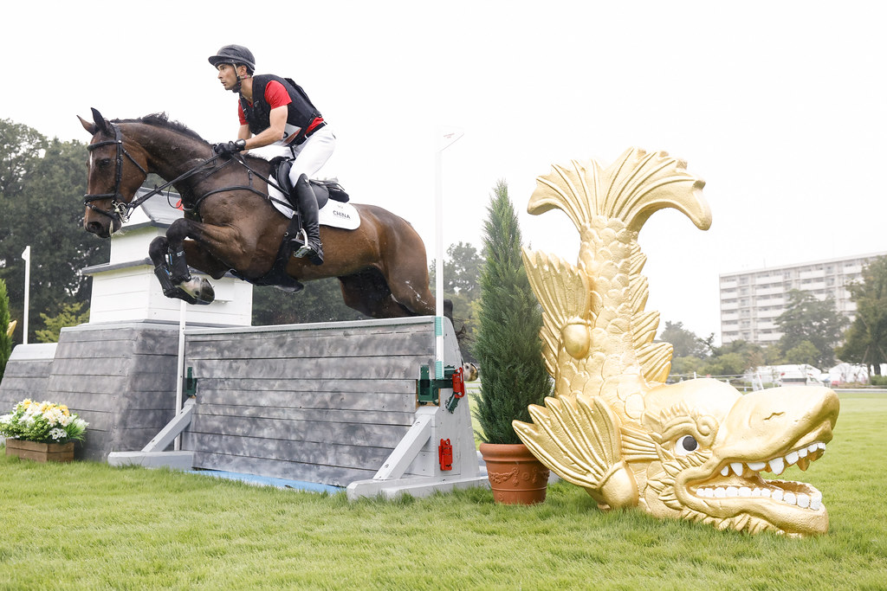

Ottawa des Desig logra el bronce en concurso completo de los Juegos Asiáticos
La yegua española, criada por José Verdú en Yeguada des Desig, se colgó la medalla de bronce en los Juegos Asiáticos de Aichi-Nagoya bajo la monta del jinete japonés Yoshiaki Oiwa.

Uso editorial autorizado FEI
Ottawa des Desig conquistó el tercer puesto en la prueba de concurso completo de los Juegos Asiáticos celebrados en Aichi-Nagoya (Japón). La yegua, criada en España por José Verdú en Yeguada des Desig, compitió bajo la monta del jinete japonés Yoshiaki Oiwa, cinco veces olímpico, con quien forma binomio desde el pasado mes de abril.
Hija del semental Contendro I y de Al Agua (por Centauer Z), Ottawa des Desig suma así un nuevo hito internacional tras proclamarse Campeona de España de la disciplina en 2025 con Carlos Díaz en la silla. El resultado de Japón amplía el palmarés de una yegua de línea materna también CDE que había demostrado ya su valía en el circuito nacional antes de dar el salto a la competición asiática.
El bronce asiático confirma la progresión de Ottawa des Desig en el concurso completo de máximo nivel, consolidando su presencia en el escaparate internacional del deporte ecuestre.
Por Lucía Valdeolmos